Serie Residencial Horizon
Espacio para vivir a su manera.
Horizon es la línea residencial modular propia de BridgePoint Strategic Group para quienes exploran casas contenedor y casas modulares en Panamá, con diseños de viviendas, núcleos de servicios y conceptos de casitas.
Conversemos sobre su proyecto en Veraguas, incluyendo Mariato y Torío. Las propuestas finales se desarrollan según su terreno y sus necesidades.
Explore ideas para una vivienda privada, alojamiento para huéspedes o un conjunto de espacios organizados alrededor de instalaciones compartidas. Cada proyecto comienza con una conversación sobre sus necesidades, su terreno y cómo desea vivir.
Nuestras imágenes conceptuales ilustran posibilidades de diseño. La distribución final, los espacios exteriores, los acabados y los elementos incluidos se acuerdan individualmente con cada cliente.

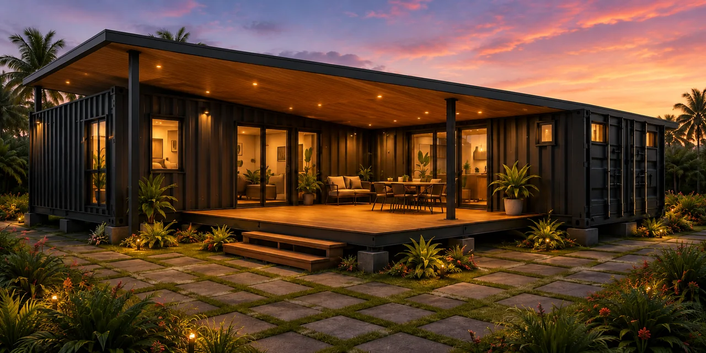
Horizon 40
Vida compacta. Posibilidades propias.
Horizon 40 reúne una recámara, un baño, una cocina y un área de estar en una vivienda basada en un contenedor de 40 pies, con un cuarto de servicios independiente.
Un patio puede extender la vida cotidiana al aire libre. Según sus preferencias y las características del terreno, el acceso y la distribución exterior pueden incluir un patio, una veranda techada o unos escalones sencillos hasta la puerta.
Las imágenes muestran posibilidades para la apariencia de la vivienda y su entorno, ayudándole a explorar la configuración que mejor se adapte a usted.
Imágenes conceptuales. Los elementos mostrados son ilustrativos; las especificaciones finales y los elementos incluidos se acuerdan para cada proyecto.
Contáctenos para consultar precios

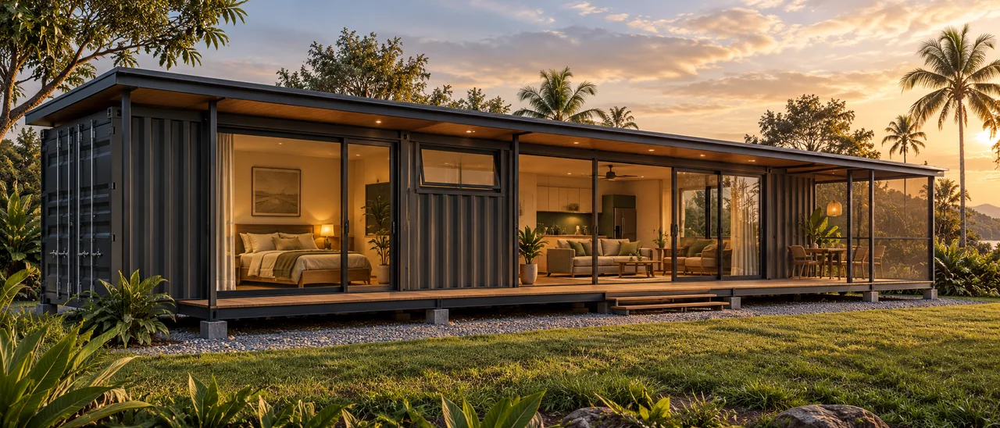
Visualizaciones conceptuales. El diseño final, las especificaciones y el alcance se definirán para cada proyecto. El mobiliario, el paisajismo y los demás elementos ilustrados no están incluidos automáticamente.
Horizon 60A
Un hogar que se abre al exterior.
Una mañana tranquila al aire libre. Comidas compartidas. Espacio para encontrar su propio ritmo.
Horizon 60A explora un concepto de vivienda de dos recámaras con cocina y áreas de estar conectadas a una terraza exterior. Su distribución crea un entorno acogedor para la vida cotidiana, tanto dentro como fuera del hogar.
Explore con nosotros la distribución, los acabados y los espacios exteriores para dar forma a una vivienda adaptada a su familia y su terreno.
Las imágenes conceptuales ilustran posibilidades de diseño. La distribución final, los acabados, los espacios exteriores y los elementos incluidos se acuerdan individualmente.
Contáctenos para consultar precios

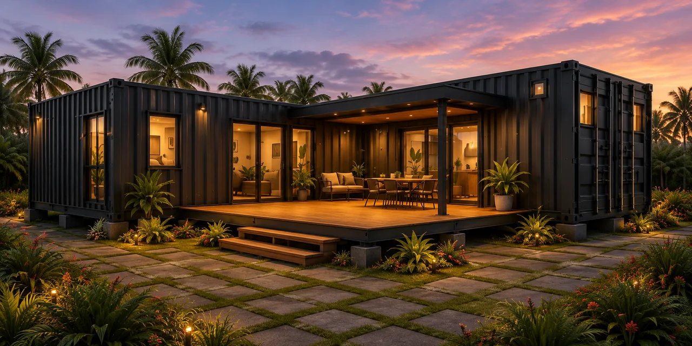
Visualizaciones conceptuales. El diseño final, las especificaciones y el alcance se definirán para cada proyecto. El mobiliario, el paisajismo y los demás elementos ilustrados no están incluidos automáticamente.
Horizon 60B
Espacio para compartir. Espacio para la privacidad.
Reúna a familiares y amigos en un área social abierta y disfrute después de la privacidad de su propia recámara.
Horizon 60B explora un concepto de vivienda de dos recámaras con un espacio central de sala y comedor, una cocina y áreas de servicio específicas. Grandes aberturas acristaladas conectan el interior con los espacios exteriores que lo rodean.
La imagen conceptual ilustra un posible entorno, que incluye una piscina y áreas exteriores ajardinadas. Estos elementos pueden conversarse como parte de su proyecto y no están incluidos automáticamente.
Las imágenes conceptuales ilustran posibilidades de diseño. La distribución final, los acabados, los espacios exteriores y los elementos incluidos se acuerdan individualmente.
Contáctenos para consultar precios

Visualizaciones conceptuales. El diseño final, las especificaciones y el alcance se definirán para cada proyecto. El mobiliario, el paisajismo y los demás elementos ilustrados no están incluidos automáticamente.
Horizon 100
Espacio para compartir. Un lugar para cada uno.
Concepto en desarrollo
Horizon 100 explora una vivienda familiar amplia, organizada en tres alas alrededor de un espacio central de encuentro. El concepto combina contenedores colocados lado a lado en cada una de las dos alas privadas para crear habitaciones más espaciosas, con las áreas sociales en el corazón del hogar.
Propone un hogar abierto a su entorno, con espacios exteriores para disfrutar de mañanas tranquilas, comidas compartidas y momentos con familiares y amigos.
Amplitud para vivir. Uso consciente de los recursos.
A medida que desarrollamos Horizon 100, buscamos combinar espacios amplios para la vida familiar con una selección cuidadosa de materiales, oportunidades de reutilización y atención al terreno y su entorno. El desempeño ambiental orientará el diseño conforme se definan su estructura, materiales y sistemas.
Imagen conceptual que ilustra la propuesta arquitectónica. La configuración mostrada se actualizará conforme avance el diseño; las especificaciones finales y los elementos incluidos siguen en desarrollo.

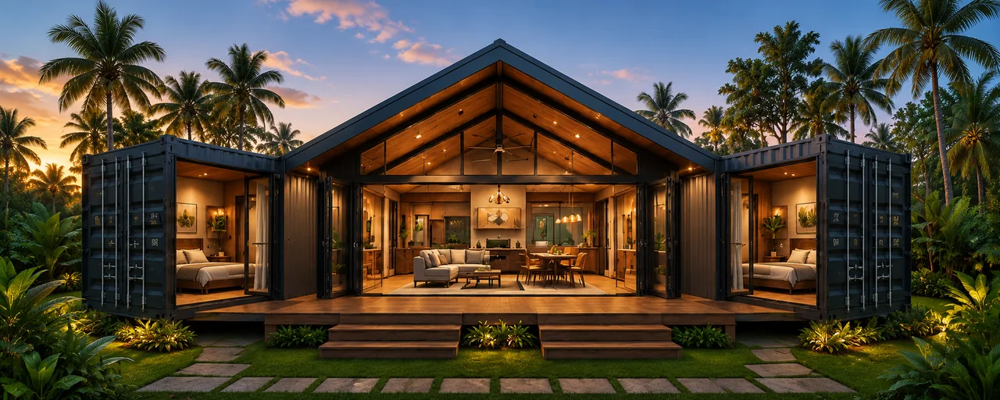

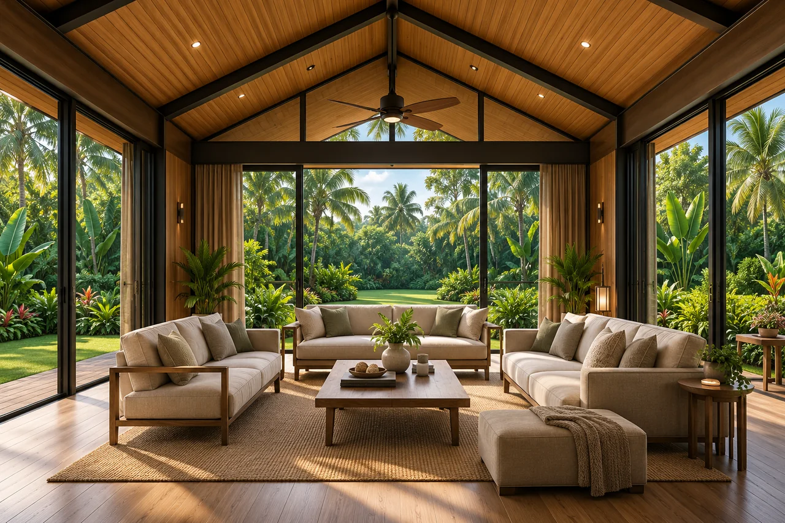

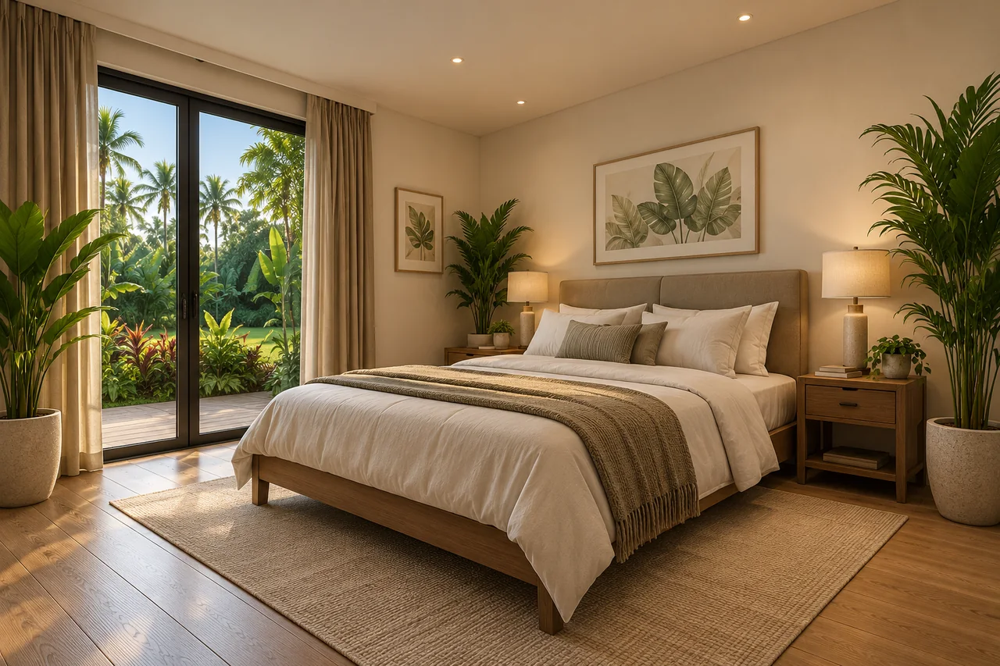
Visualizaciones conceptuales. El diseño final, las especificaciones y el alcance se definirán para cada proyecto. El mobiliario, el paisajismo y los demás elementos ilustrados no están incluidos automáticamente.
Horizon Core Series
El corazón funcional de su hogar.
Una cocina para las comidas de cada día. Espacio para la lavandería y el almacenamiento. Los servicios esenciales reunidos para que el resto de su hogar tome forma a su alrededor.
Horizon Core Series explora un núcleo modular de servicios que integra cocina, despensa, lavandería, baño y cuarto de servicios. El concepto Linear Core de 40 pies muestra cómo podrían distribuirse estos espacios dentro de un solo módulo basado en un contenedor.
A partir de este núcleo, las áreas de estar, las recámaras y los espacios exteriores pueden planificarse según sus necesidades y las características de su terreno.
Explore con nosotros la distribución, los acabados y el equipamiento para definir el núcleo de servicios adecuado para su proyecto.
Imagen conceptual que ilustra una distribución del núcleo de servicios. La distribución final, el equipamiento, las conexiones y los elementos incluidos se acuerdan individualmente.
Contáctenos para consultar precios

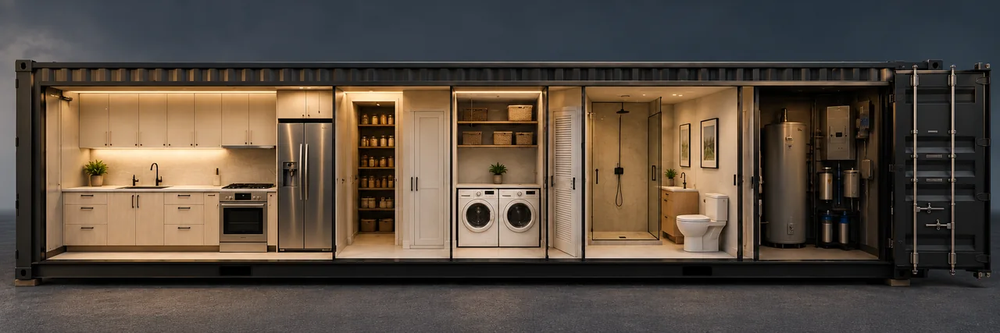

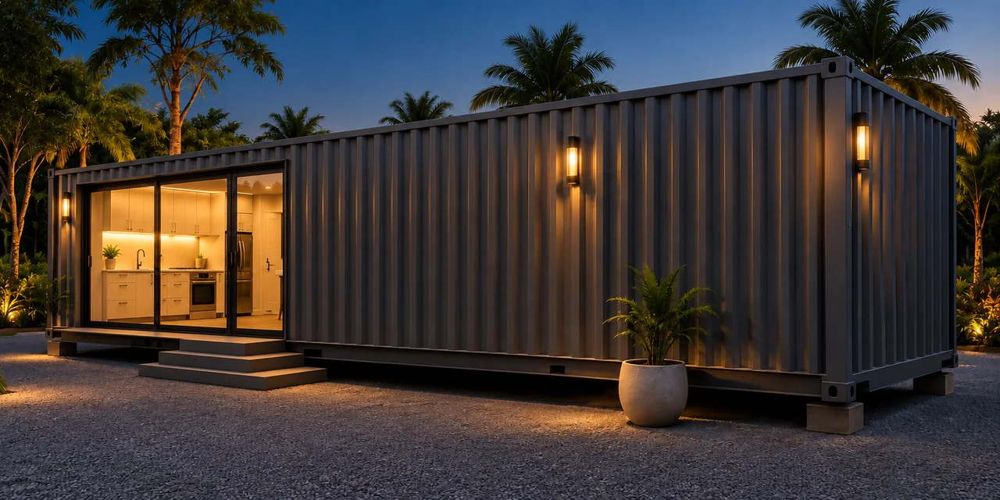
Visualizaciones conceptuales. El diseño final, las especificaciones y el alcance se definirán para cada proyecto. El mobiliario, el paisajismo y los demás elementos ilustrados no están incluidos automáticamente.
Serie de Casitas Horizon

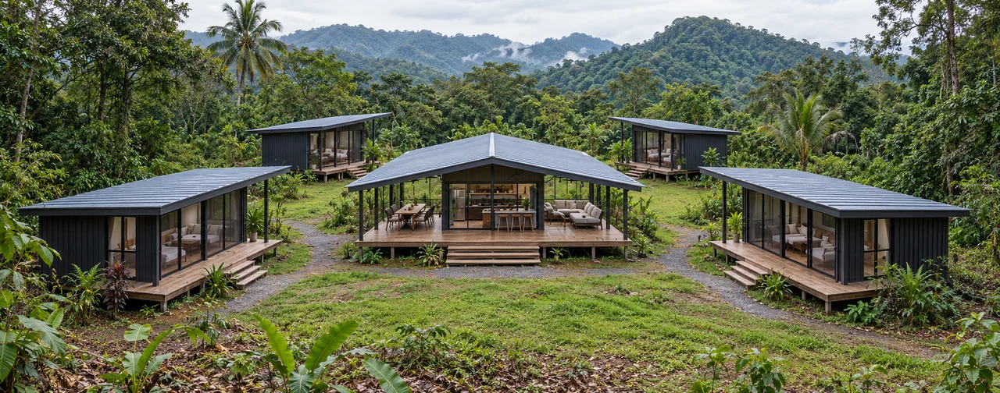
Visualizaciones conceptuales. El diseño final, las especificaciones y el alcance se definirán para cada proyecto. El mobiliario, el paisajismo y los demás elementos ilustrados no están incluidos automáticamente.
Su propio espacio. Un entorno compartido.
Un refugio privado para huéspedes. Una estancia vacacional independiente. O un pequeño conjunto de casitas alrededor de acogedores espacios compartidos.
La Serie de Casitas Horizon explora conceptos de alojamiento individual y conjuntos de hospedaje, con distribuciones adaptadas a su terreno y a la experiencia que desea crear.
Horizon 20 Independiente

Una estancia independiente.
Una recámara privada, un baño y una cocineta en la veranda forman la base de este concepto de alojamiento independiente. La veranda está techada y cerrada con paneles de malla contra insectos montados en marcos, creando un área adicional protegida para cocinar, comer y descansar.
Horizon 20 Casita de Conjunto

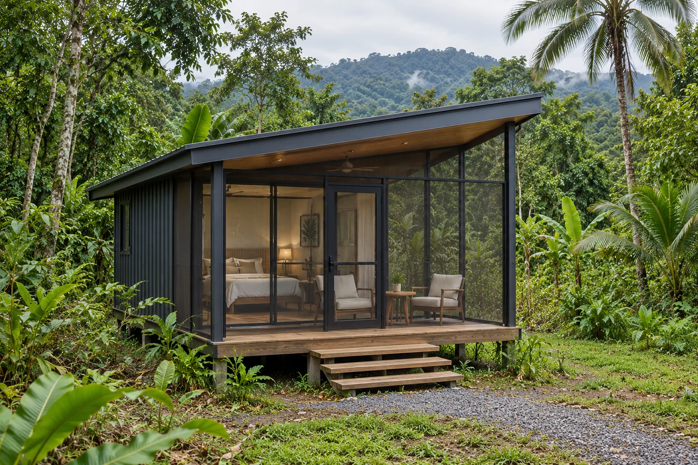
Privacidad, cerca de los espacios compartidos.
Cada casita ofrece alojamiento privado con recámara y baño, complementado por una veranda techada y cerrada con paneles de malla contra insectos montados en marcos. Esto amplía el espacio habitable más allá de la recámara y ofrece un lugar cómodo para sentarse y disfrutar del entorno.
La cocina, el comedor y las demás instalaciones compartidas se integran en un Núcleo Central independiente.
Núcleo Central Horizon

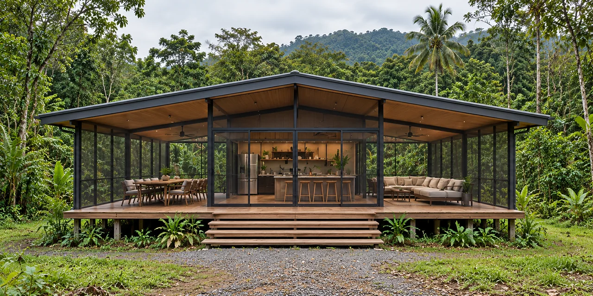
Un lugar para reunirse.
Una cocina comunitaria, un comedor y un espacio social unen al conjunto. Las verandas techadas y cerradas con paneles de malla contra insectos montados en marcos amplían las áreas de convivencia, con instalaciones de lavandería y servicios planificadas según las necesidades del proyecto.
La distribución ilustrada de cuatro casitas muestra una posibilidad. El número de unidades, las instalaciones compartidas y la configuración final se desarrollan para cada proyecto.
Las imágenes conceptuales ilustran posibilidades de diseño. La distribución final, los acabados, las verandas con malla contra insectos, el equipamiento y los elementos incluidos se acuerdan individualmente.
Conceptos de Proyectos Modulares
Espacios pensados para las personas y su propósito.
Más allá de las viviendas individuales, el diseño modular abre posibilidades para crear lugares donde vivir, trabajar, recibir atención y hospedar visitantes. Estos conceptos ilustran cómo podrían organizarse espacios basados en contenedores para responder a distintas necesidades.
Vivienda Comunitaria y de Apoyo

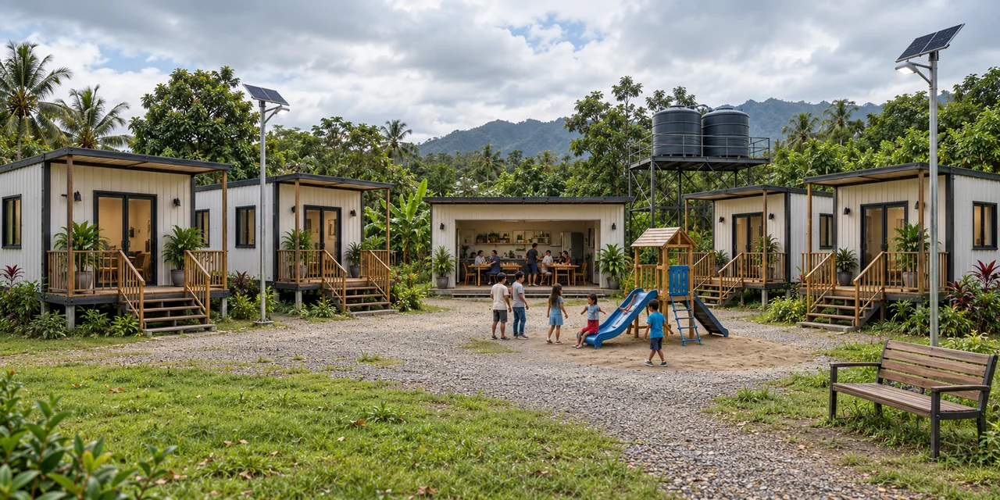
Un lugar al que pertenecer. Espacio para recuperar la estabilidad.
Alojamiento privado organizado alrededor de cocinas, comedores e instalaciones comunitarias compartidas.
Este concepto explora viviendas de mayor permanencia para personas que no pueden costear una vivienda, alojamiento de transición mientras personas y familias recuperan su estabilidad económica y alojamiento temporal después de desastres.
Los proyectos podrían desarrollarse con gobiernos, ONG u organizaciones comunitarias, definiendo con la organización patrocinadora el financiamiento, los criterios de elegibilidad, la gestión y los servicios de apoyo.
Clínicas de Salud y Veterinarias

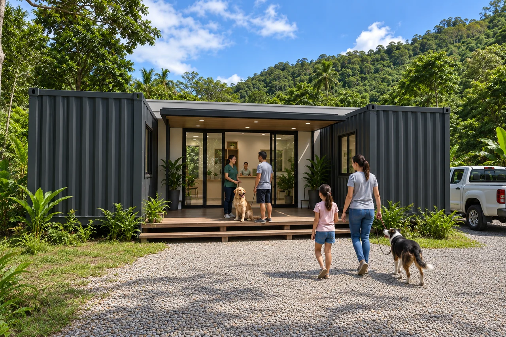
Espacios diseñados en torno a la atención.
Conceptos modulares para servicios de salud humana o veterinaria, con áreas de consulta, tratamiento y apoyo planificadas para cada uso. La distribución, el equipamiento y los requisitos se desarrollarían con los profesionales pertinentes y los socios del proyecto.
Conceptos de Hospitalidad

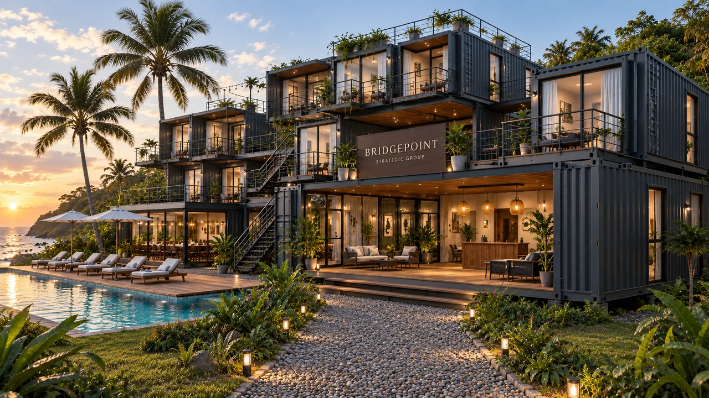
Un lugar especial para alojarse.
Explore posibilidades de alojamiento boutique y alquileres vacacionales, combinando espacios privados para huéspedes con áreas compartidas de comedor, recreación o recepción, según el proyecto.
Oficinas Modulares

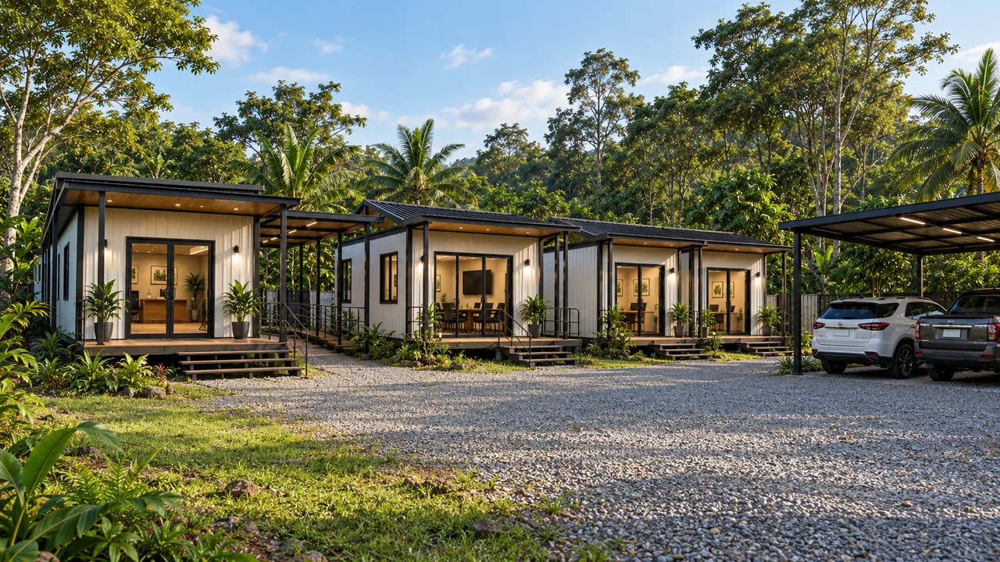
Espacio para trabajar juntos.
Conceptos de oficinas que integran recepción, salas de reuniones y espacios de trabajo privados en un conjunto coordinado, con conexiones techadas e instalaciones de apoyo adaptadas a las necesidades de la organización.
Las imágenes conceptuales ilustran posibles aplicaciones, no proyectos terminados. Cada propuesta requiere su propio desarrollo de diseño, evaluación del terreno, especificaciones y aprobaciones aplicables.
Visualizaciones conceptuales. El diseño final, las especificaciones y el alcance se definirán para cada proyecto. El mobiliario, el paisajismo y los demás elementos ilustrados no están incluidos automáticamente.